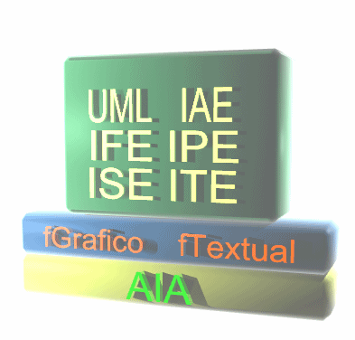

Coloso esta organizado bajo tres conceptos fundamentales:
- Frameworks: Proveen
un marco arquitectónico y funcional para Coloso. Los frameworks se
organizan jerárquicamente en tres niveles diferentes, siendo el
principal Ambiente Artístico Ingenieril (AIA) el cual da soporte a todos los otros frameworks. Bajo AIA
se desarrollan el Framework Gráfico (fGráfico) y el Framework Textual (fTextual) que dan soporte a los frameworks
derivados de Unified Modeling Language(UML), Integrated Artistic Enviroiment (IAE),Integrated Programming Enviroiment (IPE), Integrated Semantic Enviroiment (ISE), Integrated Testing Enviroiment (ITE). La Figura 1 muestra la relaciones la composición de los diferentes componentes estructurales de Coloso.

Figura 1. Componentes Estructurales de Coloso
- Plugins: Estos
desarrollan una particularidad funcional asociada a un framework. Se
dividen funcionalmente en plugins de modelado y de diseño.
- Componentes: Estos
pueden ser utilizados por los diferentes plugins para extender la
funcionalidad, se dividen funcionalmente, al igual que estos, dependiendo
de su orientación.
La ayuda de Coloso se estructura de manera similar
al esquema arquitectónico de la herramienta, con el fin de ofrecer
continuidad entre ambas.
|